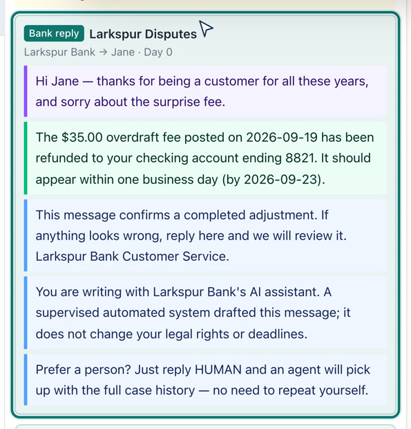
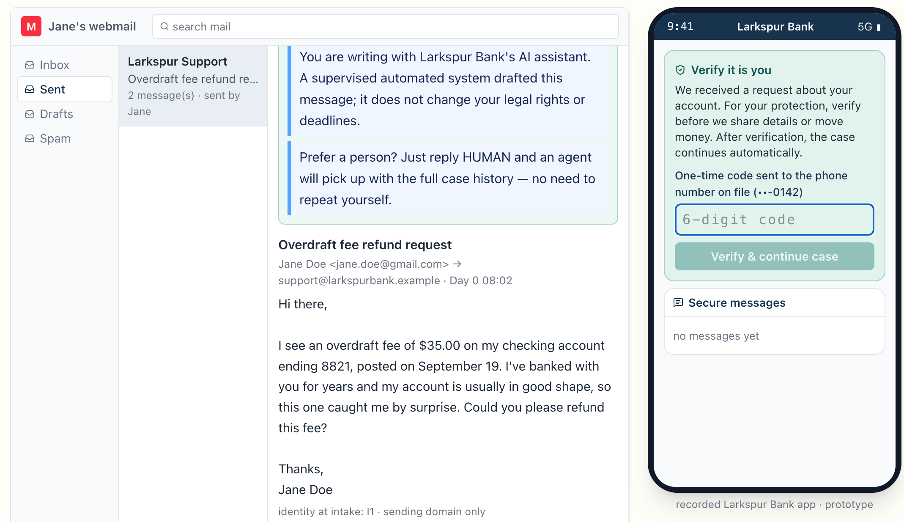
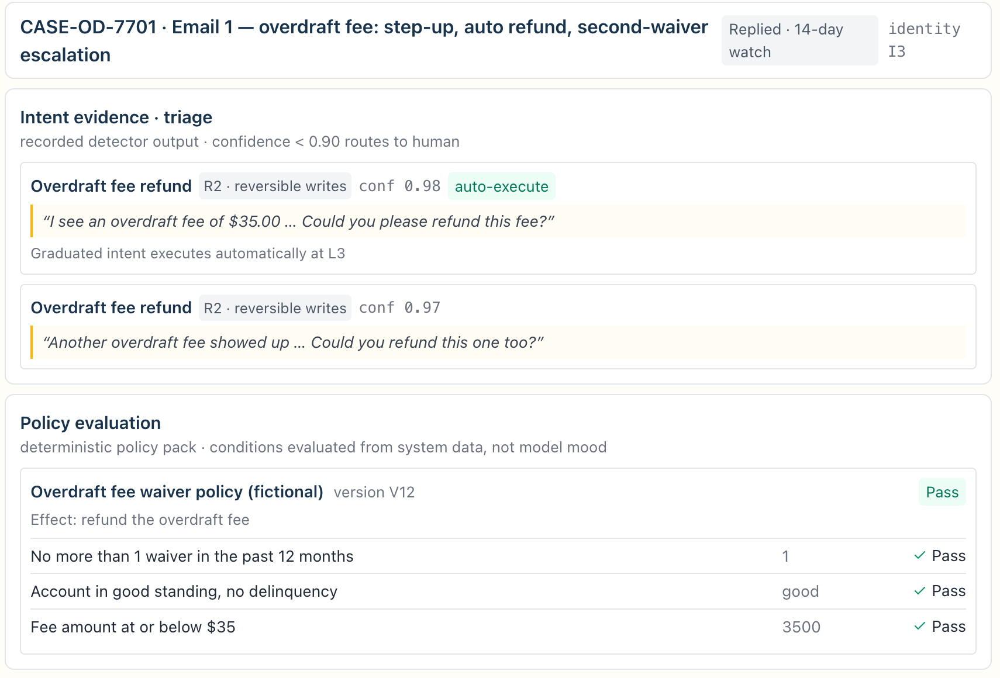
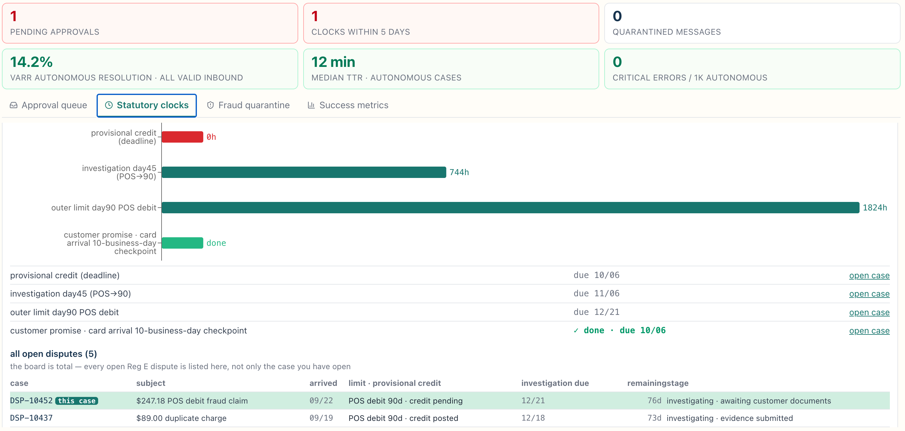
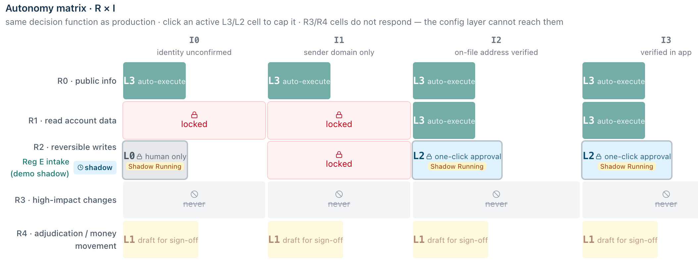

- Turn every inbound email into a verified, compliant and fully resolved case.
Wu Kun, wukun2005@gmail.com, October 2026
01 Assumptions & beachhead
Of 8,445 insured US institutions, 262 banks sit in the band we may serve — big enough to run Reg E, small enough to buy rather than build.
02 Why they care
An email is a written error notice under Reg E — and email is still the slowest channel the bank runs.
03 Why we prioritize email
| Opportunitythe one decisive fact | Left to buildon the runtime that already ships | No live interruptionasync — the clock runs on a mailbox | Same baseadd-on on contracts that already exist | Time to valueto a number we can audit | Revenuewhat it can bill |
|---|---|---|---|---|---|
| Email · this proposaladd-on on the 262-bank install base | ✓the vertical layer alone | ✓mailbox clock, nobody on hold | ✓add-on, no new logos | ||
| Voice AI agentour core market — every rival is live | –a parity build — rivals are live | ✗live caller on the line | ·it is the base | ||
| Chat AI agentsame buyers as voice, smaller surface | –a parity build — smaller surface | ✓threads wait their turn | ·same buyers | ||
| Voice agent-assistwe already ship it, person stays on | ·nothing — it already ships | ✗live call, person present | ·already on those accounts | ||
| QA automationadjacent product, thin revenue line | ·nothing — it already ships | ✓offline review | ·same accounts | ||
| Collectionsmoney moves — R4, permanent L0 | ·nothing — money stays R4 / L0 | –async intake, money still moves | ·same base |
What email still costs us: pricing is our own $1.50 assumption (B12: no public price), and an auditable number takes 90 days to build — where nobody has done it, the blank is also the opportunity. Bars: length = how much, colour = good or bad.
04 Scope
Sort order first — volume × determinability × identity achievability, gated by regulatory risk. Then one line: everything reversible goes to the machine, everything consequential stays with a person.
Route-only in wave 1: complaints, fraud and off-brief mail are detected, clocked and handed to a person — never answered autonomously. UDAAP wording review follows in wave 2. Full wave matrix: B9.
05 How it works
Nine steps. After step 5 the matrix picks one of three roads — auto, one-click, human-only — and only step 8 reaches the customer.

06 AI and humans
07 Intelligence
The gates already exist. Backtest, shadow, dual sign-off and auto-demotion already ship — what was missing was a nominator, and every output is a configuration diff flowing into those same gates.
08 Key experiences mail-autopilot-fs-demo.vercel.app↗ github.com/wukun2005-gif/mailAutopilotForFS↗




09 Why we win
Window: 12–18 months. We spend it on what the platform already ships — CXA Operations Center, Agent Builder, Automation Flows, and core-banking connectors since April 2025. Freshworks has shipped autonomous email since 2025-06; nobody has shipped the case.
Most automate the reply; few propose the rules.
10 Value & priority
600,000 emails a year at $8 each. What we take out depends on how much we can genuinely finish.
Net-new, not cannibalized. Async mail is the safest autonomy proving ground, and 90 days of history is a ready-made eval set: the bank keeps the saving, the vendor's fee sits on top of it.
Three levers move together across the three cases — failed demand, autonomy, copilot uplift. 35% is measured against email net of failed demand; against all valid inbound it reads ≈30% — both published, both in B2. Inputs come from the customer's own mail: mix and baselines in week one, pricing in four weeks.
11 How we would know
12 Risk
Also on the register: tipping-off vs duty to speak (31 CFR 1020.320(e)) · over-disclosure to an unverified sender (GLBA) · third-party risk review · vulnerable-customer fairness · the LLM-as-judge flipping verdicts in evaluation (14%) · sign-off fatigue — L2 approvals and AI nominations both drift toward rubber-stamping (watch the approve-without-edit rate, sample the approved files) · a step-up link that collides with “never click a link in an email” training. Full list — seventeen risks — in Backup B11.
13 Roadmap
The new part is the layer, not the channel — a thin vertical layer, no new platform or runtime. Full stack: B16 · the day-0 ask, item by item: B19.
Questions
Backup · B1 Overview video · 2:06
Ninety-nine seconds: three emails — dispute, refund, fraud — and the admin console that sets their limits.
Backup · B2 The ROI, line by line
600,000 emails a year at $8 = a $4.8M cost base. Three base-case levers (B12): repeat contacts −15% · resolved autonomously 35% · the rest 30% faster. One price moves all three: $1.50 a resolution, billed only on the 35% the AI resolves — the other two are not billed separately.
| Line | Calculation | Value |
|---|---|---|
| Failed demand falls — repeat contacts −15% | 600,000 × 15% × $8 | ≈ $720k |
| Resolved autonomously — 35% | 600,000 × 85% × 35% × $8 | ≈ $1.43M |
| Copilot uplift on the rest — 65% | 600,000 × 85% × 65% × $8 × 30% | ≈ $800k |
| Less what we charge — $1.50 a resolution | 600,000 × 85% × 35% × $1.50 | − $268k |
| Net | Sum of the four lines — about 56% of the $4.8M cost base | ≈ $2.68M · ≈32 FTE of capacity |
Two denominators, both reported. 35% is measured against email net of failed demand; against all valid inbound it is ≈30%. Both are published side by side, so the denominator is never chosen after the fact.
Backup · B3 Reg E · Reg Z · retention
| Reg E node · 12 CFR 1005.11 | Deadline | Note |
|---|---|---|
| Notice of error received | at receipt | Oral or written — an email counts; clock starts on server arrival time |
| Investigate | 10 business days | Otherwise post provisional credit within 10 BD |
| Provisional credit | 10 business days | New accounts: 20 business days |
| Maximum investigation | 45 days | New account 90 days; POS debit and foreign transfer 90 days — 1005.11(c)(3)(ii) |
| Notify of provisional credit | 2 business days | Correct the error within 1 business day |
| Notify outcome | 3 business days | No error → written explanation under 1005.11(d) |
| Clock while awaiting materials | never pauses | Interpretation 11(b)(1)-2 — no pause entry exists in the product |
| Other obligation | Deadline | Note |
|---|---|---|
| Reg Z 1026.13 written claim | ack in 30 days | Claim within 60 days of statement; resolve within 2 cycles, max 90 days |
| Email retention | Longest applicable | The bank's own correspondence-retention schedule plus legal hold. Broker-dealer channels would add FINRA 17a-4 / 4513 — out of scope for v1. |
| Record keeping | 5-year default | Reg E 1005.13 and Reg Z 1026.25 ≥2 yrs; BSA 1010.430(d) and SAR 1020.320(d) 5 yrs — WORM dossier |
| SAR secrecy | no tipping-off | 31 CFR 1020.320(e) conflicts with the Reg E and Reg Z notice duty — routing decided by legal and BSA, never by the AI |
Terminology guard: Reg E has no explicit acknowledgement duty — the 30-day acknowledgement is a Reg Z requirement. Enforcement anchor: 2019-BCFP-0001 (USAA Federal Savings Bank) cited the bank for “requiring customers to contact the merchant first”, which the CFPB Reg E FAQ (Q4, Q9) prohibits — the product must never require a signed statement or police report before accepting a dispute.
Backup · B4 Questions I expect
Backup · B5 Four more questions I expect
Four more, because these are the four that decide the follow-up: system of record, unit economics, the team, and what is left after the window.
Backup · B6 Guardrails · stage targets
| Guardrail (monthly) | Threshold and action |
|---|---|
| Regret rate by intent | Two consecutive weeks > baseline +2pp → auto-downgrade to L2 (assumption) |
| Two-sided monitoring | Watch “should have delegated but did not” as well as “delegated but should not have” |
| Handoff rate and reasons | System-failure share >10% → engineering alert |
| Customer-side signals | CSAT not below the human baseline; rising repeat contact freezes graduation |
| Clock health | Inside the 48-hour warning zone → pinned atop the supervisor console |
| Drift detection | PSI shift or new intent clusters → auto-downgrade plus a labeling queue |
| Detection latency | Regulated-intent P99 ≤ 15 min (assumption) → alert on breach |
| “Please call us” rate | Baseline 22% (assumption), must fall month over month |
| Cohort parity gap | Approval, TTR and step-up drop-off gaps under 2pp (assumption) across language / 62+ / LMI tract / channel / stated vulnerability — a precondition for any nomination or policy diff |
| Preventable-inbound rate | Share of mail an event-triggered notice could have prevented; reviewed quarterly, and the rule is withdrawn if that class does not fall |
| Canary-nomination hit rate | Planted nominations known to be reject-worthy, correctly rejected: must stay 100% — one wrong signature suspends bulk signing |
| Bulk-remediation error rate | Wrong refunds in post-hoc review: 0 is the precondition for the next batch; every batch dual-signed, idempotent and reversible |
| Checkpoint | VARR | TTR | Trust |
|---|---|---|---|
| Pilot week 4 · shadow ends | not published; routing accuracy only | unchanged | recall ≥99.5% to enter; zero misses to exit |
| Pilot week 6 · L1 / L2 | 10–20% band (assumption) | observed only | zero critical errors · 100% file completeness |
| End of pilot · day 59 | first formal measurement, no preset value | baseline established | 100% clocks · ≥2 intents reach L3 |
| 6 months post-GA | 25–35% (assumption) | <1 business day; autonomous <15 min | sustained zero critical errors |
| 6–9 months post-GA | 20 / 35 / 50% tiers | <15 min as the norm | regret rate below the human QA error rate |
The one I would not trade: any promise the AI makes becomes a clock the moment the letter is sent, cleared only when the fulfillment letter goes out — Zendesk's Verified Resolution, made regulator-grade.
Backup · B7 Trade-offs
Also given up, on purpose: assembled letters over fluent ones, an in-thread step-up link over in-app, a runtime of our own, and mega-bank deals — they build, and Sierra owns that story.
Backup · B8 Competitor detail · verified 2026-09
| Vendor | Group | What it has | What is missing | Price (public) |
|---|---|---|---|---|
| Talkdesk Autopilot | CCaaS | Email GA 2026-02-23, Automation Flows, FS connectors since 2025-04, 16 banking agents | No dispute-intake agent in the catalog; email anti-injection not published | $85–225 / seat |
| NICE · Genesys · Five9 | CCaaS | Channel-agnostic agents; NICE AI Control Plane 2026-09; Genesys ARR $2.9B, +30% | Email never promoted; no packaged FS; Five9 is voice-first | ~$110 / seat (Genesys, 3rd-party) |
| Salesforce + Fin | CRM | Two-Way Email, Help Agent pay-per-resolution; Salesforce closed its $3.6B acquisition of Fin, 2026-09-10; 67% average | No real-time contact-center ops, no prebuilt core-banking connectors; cases are e-commerce shaped | $0.99 / outcome |
| Zendesk AI | CRM | An independent model verifies every billed resolution, from 2026-05-18 | All-channel mix, email never broken out; FS cases are all fintech and chat scope | $1.50–2.00 / res |
| Freshworks · Microsoft | Helpdesk | Freshworks first to headline autonomous email, 2025-06 | SMB, no FS depth, no voice; D365 does not promote autonomous send | — |
| Sierra | AI startup | $15.8B valuation, ~$200M ARR, BBVA agent live 2026-08-04 | No public Reg E clock engine, dispute state machine or audit dossier | est. $50–200K + $1–2.50 / res |
| Decagon | AI startup | $4.5B valuation; Chime at 70% resolution, chat and voice | Core banking only via custom integration, no prebuilt connectors | not public |
| Lorikeet · Aide | AI startup | Reg E / UDAAP / FCA packs; “compliance team as a first-class user” | The customer defines resolution; escalation is free — no statutory clock product | $2.1–5.1K / mo + $0.90–0.99 |
| Glia | FS specialist | 700+ banks and credit unions; contractual guarantee against hallucination and injection, 2026-03-12; per-topic Strict mode | No email specialty in public materials — the guarantee covers content, not actions or identity | not public |
| Eltropy · interface.ai | FS specialist | 750+ credit unions and community banks; agentic platform | Authenticated channels; no email case model. Kasisto: 1,800+ bank intents but in-app and IVR only | not public |
| Amazon Connect · RingCentral | Other | Connect: chat and voice self-service, docs 2026-09-21 | Email AI is draft-assist only; RingCentral is healthcare-first | — |
What the gaps mean: every “missing” cell above is absence in public materials, not absence in the market. Threat ranking: big banks → Sierra × Salesforce+Fin; beachhead → Glia first, Eltropy second. On that same public material, everyone here automates the reply and no one proposes the rules — the governance layer these agents run inside is still written by hand.
Backup · B9 Wave matrix · hard “never” list
| Category | Wave | Delegation design |
|---|---|---|
| General inquiries · 25% | W1 | L3 direct answers with policy grounding and source citation |
| Transactions · 20% | W1 | Reads L2→L3; in-threshold refunds pass policy; a 2nd refund in 12 months goes to a human |
| Account servicing · 25% | W1 reads | Reads and reversible lock at L3; contact change and reissue are R3, never automatic |
| Disputes · 10% | W1 intake | Detect, clock, receipt, chase documents, build the file; adjudication stays L0 |
| Fraud and security | W1 protect | Detect → quarantine → confirm over on-file channels; never replies into a suspected-fraud case |
| Spam / noise | W1 | L3 auto-archive; excluded from the VARR count |
| Payments / payoff · 15% | W2 | Letters automatic; changing autopay or payee account is R3 → authenticated channels |
| Complaints and vulnerable | W2 deep | W1 is detect, warm handoff, clock registration; UDAAP wording review in W2 |
| Off-brief · 5% | Route only | Legal process, POA — recognize and route at L0, closure never automated |
| A2A · cross-institution threads | Waits · vision | An agent holds thread state and the evidence pack across institutions; negotiation and settlement stay human — on the “never” list below, not on the roadmap |
Sort order: volume × determinability × identity achievability, then gated by regulatory risk. Wave is delivery order, not importance. The configuration layer must not offer a switch for anything on the “never” list — they are not off by default, they are absent.
Backup · B10 Pilot plan · go / no-go
| Go / no-go · day 59 | Criterion |
|---|---|
| Trust (veto) | Zero critical errors · 100% clock attainment · ≥99.5% recall with zero misses · 100% file completeness — any miss is a No-go; park intents at L1/L2 and re-run shadow |
| Value | ≥2 intents signed off for L3 at the gate, rollout W9–W14 · VARR under both denominators · autonomous median TTR <15 min → extend 14 days, so the day-45 cohort's observation window completes |
| Customer side | CSAT ≥ human baseline · repeat contact and handoff ≤ baseline |
| Operational | L2 approval SLA ≤4 business hours, met ≥95% (assumption) |
A readiness report precedes each delegation: three-stratum backtest results, sample counts, error rates, and the grayed-out R3/R4 cells shown to compliance as-is.
Backup · B11 Full risk register
| Risk | Evidence | Countermeasure |
|---|---|---|
| 01 · Missing a regulated intent | FDIC 2025: 136 Reg E violations, 74% in error resolution; the clock runs from receipt | Ingest-time high-recall detection, false positives preferred, backlog prioritized |
| 02 · Hallucinated policy, fee or deadline | Reg E, Reg Z and UDAAP exposure; Moffatt v. Air Canada C$650.88 | Locked templates, claim-level gate, amounts, dates and deadlines only from system slots |
| 03 · Irreversible wrong action | SABER: each deviation in a mutating action cuts success odds by up to 92–96% | Tool allowlist, parameterized actions, R0–R4 tiers, L2 human approval, idempotency keys |
| 04 · Indirect prompt injection | INJECAGENT: GPT-4 ReAct injected 24% of the time (ACL Findings 2024); AutoInject v2 ASR 58.00% | External content in a data-isolation zone, agent-to-tool firewall, least privilege |
| 05 · BEC and account takeover | ATO invalidates every normal signal — reserved-email match, SPF/DKIM/DMARC and thread history all pass | Change-account and move-money never in the email allowlist; step-up to an authenticated channel |
| 06 · Over-disclosure to an unverified sender | GLBA privacy duty | Disclosure fields gated by identity-assurance level; statements via secure link, never attachments |
| 07 · Tipping-off vs duty to speak | 31 CFR 1020.320(e) SAR secrecy conflicts with the Reg E and Reg Z notice duties | Routing decided not by AI; suspicious cases use locked templates; clocks still run |
| 08 · Data use, privacy and third-party review | 2024 CIPA class actions over voice AI; 2023 interagency Third-Party guidance | No cross-customer training by default, optional data residency, prebuilt SOC 2 / PCI / ISO, TPRM evidence |
| 09 · The evaluation itself failing | LLM-as-judge: 14% average verdict flip rate; position bias spans two orders of magnitude | Randomized paired order, fixed rubric, structural checks, sampled human review |
| 10 · Fairness and vulnerable customers | FCA Consumer Duty; UK DISP: summary resolution within 3 business days | Group monitoring, vulnerable-customer eval coverage, no hard-sell on hardship signals |
| 11 · An intent stuck at L2 | Graduation needs 90 days of samples — a low-volume intent may never collect them | Wave 1 selected on sample volume before any build; shadow run labels from day 1; L2 measured on assist rate and handle time, re-tested quarterly |
| 12 · L2 approvals turn into rubber-stamping | One-click approvals drift toward auto-yes without reading | Watch the approve-without-edit rate, sample the approved files, re-test quarterly |
| 13 · Step-up link collides with no-link training | Banks train customers to never click a link in an email | Single-use in-thread link plus an app/OTP path; locked template states both options |
| 14 · Sign-off fatigue | The whole governance claim rests on signers actually reading every diff | 30-day rate limit after a rejection · four-proof evidence bar · three dissent cards · canary nominations — one wrong signature suspends bulk signing |
| 15 · A remediation batch refunds the wrong accounts | One wrong tape signature overpays thousands of accounts at once | Bank-error confirmation, dual-signed sample and total before each 1% → 10% → 100% batch; idempotent and reversible |
| 16 · Proactive outreach widens the phishing surface | Every outbound the bank sends trains customers to expect its mail | Locked templates and slots, account facts only, no credential links, on-file addresses, caps, opt-out; not-sending is logged too |
| 17 · The no-edit rate gets gamed | A team can raise approval quality by rubber-stamping rather than editing | Sampling and critical-miss review run independently of the no-edit rate; never the sole graduation input |
Not immunity: CFPB guidance was withdrawn in 2025-05, but Reg E and Reg Z still stand — hence proactive AI identity disclosure regardless of requirement.
Backup · B12 Every assumption in this deck
| Assumption | Value used |
|---|---|
| 01 · Customer profile “Larkspur Bank” | $18B assets · 1.1M customers · 420 FTE · 50k emails a month · Fiserv DNA + Q2 |
| 02 · Loaded cost per email | $8 (aggregate estimate; ranges on p.04) |
| 03 · Annual email volume | 600,000 |
| 04 · Baseline response metrics | 27h first reply · 3.2 days to resolution · 22% “please call us” |
| 05 · Three ROI levers (low / base / high) | failed demand −10 / −15 / −20% · VARR 20 / 35 / 50% · copilot +20 / +30 / +35% |
| 06 · Per-resolution price | $1.50 (Talkdesk has no public price) |
| 07 · Intake mix by category | 25 / 25 / 20 / 15 / 10 / 5% — general, servicing, transactions, payments, disputes, route-only |
| 08 · VARR verification window | no reopen within 14 days of resolution |
| 09 · Competitive window | 12–18 months before incumbents close the gap |
| Assumption | Value used |
|---|---|
| 10 · Seat license used for cannibalization | Elite $165/seat/month |
| 11 · VARR target | 25–35% at six months, anchored on Talkdesk 2026: 38% of leaders already resolve >40% all-channel |
| 12 · Detection latency | regulated-intent P99 ≤ 15 min |
| 13 · Regret-rate / drift auto-downgrade | baseline +2pp for two consecutive weeks |
| 14 · Mid-flow halt rate target | < 0.5% |
| 15 · L2 approval SLA | ≤4 business hours, met ≥95% during the pilot |
| 16 · Pilot week-6 VARR band | 10–20% before the day-45 measurement |
| 17 · Capacity released | ≈32 FTE of capacity for disputes and complex cases — not a headcount target |
| All of the above | Baselines and mix from the mail export in week one · pricing in 4 weeks · backtest on 90 days |
The brief invites stated assumptions. Putting all seventeen on one page turns the weakest numbers in the deck into something controlled — rather than something to be caught out on.
Backup · B13 Packaging · price · motion
All four are proposals, not commitments: the price, the platform minimum and the sequencing are the three things a design partner would rewrite first.
Backup · B15 Admin walkthrough github.com/wukun2005-gif/mailAutopilotForFS↗
The model drafts the diff; the bank signs it. Nominations, wave remediations and policy changes all arrive as configuration diffs — and every one of them has to clear the same gates.
Backup · B16 Architecture
Backup · B18 The seven rules every feature passes
| Rule | What it means in practice |
|---|---|
| 1 · Never in the decision path | The LLM never sits inside a decision. It advises — drafting, explaining, summarising, suggesting wording — it never judges; the rule engine decides. |
| 2 · The ratchet | Tightening is immediate and time-boxed: a same-day change may only tighten, and must carry an expiry. Any loosening runs backtest → shadow → dual sign. Policy content changes are dual-signed either way. |
| 3 · Predictions change wording, never outcomes | Customer value and churn never enter a decision — otherwise “the squeaky wheel gets the grease”, which is an ECOA and UDAAP problem. A consequence preview may reword a letter; it may not re-decide it. |
| 4 · ROI first, evidence decides | ROI decides who we build for first. Evidence decides whether it can be built at all — 90 days of samples, four proofs, zero critical misses. |
| 5 · New things are born in shadow | Humans set R and I levels. Candidates start shadow-classified and graduate normally. R3 never enters email; R4 stays L0 permanently. |
| 6 · Proactive outreach is account facts only | Locked templates plus slots, frequency caps, opt-out (statutory notices excepted), on-file addresses only, no marketing, no links asking for information or credentials. A decision not to send is logged too. |
| 7 · Fairness is a required answer | Every nomination and policy diff carries cohort impact across language / 62+ / LMI tract / channel / stated vulnerability. Cohort data is monitored only — no protected attributes collected. The engine is deterministic, so unfairness comes from its surroundings: identification error, step-up drop-off, or approver variance at L2. |
Why these seven: they are the difference between a demo and something a bank can put in front of an examiner. Each one is enforced in the prototype, not asserted on a slide — the engine refuses the action, the config layer has no switch, or the metric blocks the graduation.
Backup · B19 The ask, item by item
The commercial question is the one that decides the packaging — see B13. Everything above is what we would ask a design partner for on day 0.